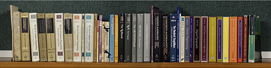

Donald Knuth
A website dedicated to the life and work of Donald Knuth
Home
Awards
Books

The Art of Computer Programming (TAOCP)
The TeXbook
The METAFONTbook
Computers & Typesetting
Concrete Mathematics
The Stanford GraphBase
MMIXware
The CWEB System of Structured Documentation
Literate Programming
Selected Papers on Computer Science
Digital Typography
Selected Papers on Analysis of Algorithms
Selected Papers on Computer Languages
Selected Papers on Discrete Mathematics
Selected Papers on Design of Algorithms
Selected Papers on Fun and Games
Companion to the Papers of Donald Knuth
Surreal Numbers
Mathematical Writing
Mathematics for the Analysis of Algorithms
Mariages Stables
Axioms and Hulls
3:16 Bible Texts Illuminated
Things a Computer Scientist Rarely Talks About
Fantasia Apocalyptica Illustrated